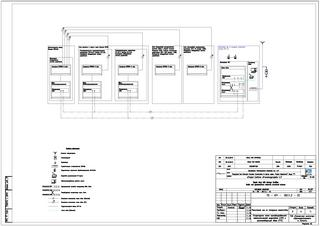
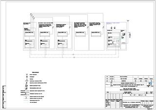

ФИО: Тимонин Владимир Владимирович
Год рождения: 1979
Место проживания: Харьков
Среднее образование: СШ №99, г.Харьков, 1986-1996
Высшее образование: Харьковский Национальный Университет Радиоэлектроники, факультет: "Телекоммуникации и измерительная техника", 1996-2001
Специальность: инженер связи
Карьера:
2016-настоящее время: ООО "Радио-Линк", г.Харьков, иженер-проектировщик. Обязанности: проектирование систем видеонаблюдения, систем и сетей связи. Достижения: разработал проектную и рабочую документацию системы видеонаблюдения "Безопасный город" (г.Чугуев, Харьковская обл.); разработал проектную и рабочую документацию пассивной оптической сети PON (г.Люботин, Харьковская обл.); в данный момент разрабатываю проектную документацию сетей PON в нескольких районных центрах Харьковской области.
2016: ООО "Укрнефтехимпроект", г.Харьков, иженер-проектировщик. Обязанности: проектирование сетей и систем связи. Достижения: разработал проектную документацию для слаботочных и охранных систем строящегося газохимического комплекса (г.Атырау, Казахстан).
2015-2016: "IBC Solutions", г.Москва, иженер-проектировщик. Обязанности: проектирование системы "Умный дом", проектирование систем освещения зданий, вентиляции и кондиционирования. Достижения: разработал проектную и рабочую документацию по системе "Умный дом" для многокомнатной квартиры (г.Москва); разработал проектную и рабочую документацию по системе освещения ресторана (г.Москва); разработал проектную документацию по системе наружного и внутреннего освещения строящегося офисного комплекса (г.Екатеринбург); разработал рабочую документацию по системе "Умный дом" для загородного коттеджа (г.Москва).
2012-2015: ООО "Союзэнергопроект", г.Харьков, иженер-проектировщик. Обязанности: проектирование сетей и систем связи, проектирование систем автоматизации водоснабжения, вентиляции и пожаротушения, подбор оборудования проектируемых систем, ведение деловой переписки с заказчиками и поставщиками. Достижения: разработал комплект внутриобъектовой связи на ПС 110 кВ Веселое (Россия); разработал комплект автоматизации системы водоснабжения внутренней сети на ПС 110 кВ Спортивная (Россия); разработал комплект шкафа управления системы автоматического пожаротушения на ПС 220 кВ Надежда (Россия); разработал комплекты заданий заводу на изготовление шкафов автоматики пожаротушения, шкафов управления вентиляцией, шкафов управления насосами на ПС 220 кВ Надежда (Россия); разрабатывал комплект организации сети связи на ПС 220 кВ Тамань (Россия).
2001-2012: ОАО "Укртелеком", г.Харьков, иженер связи. Обязанности: руководство персоналом станции; работа с клиентами компании; техническое обслуживание цифровой АТС типа EWSD, административное управление системой, маршрутизацией, трафиком, учетом стоимости; ведение технической документации. Достижения: осуществлял технический надзор во время монтажа и наладки АТС, тестировал новое телекоммуникационное оборудование и программное обеспечение, занимался настройкой станционных параметров и межстанционных связей. Параллельно читал лекции и проводил практические занятия в корпоративном Учебном Центре.
Дополнительные курсы:
Технологии Web: HTML5, CSS3, JavaScript (ES6), NodeJS
Иностранный язык: Английский (уровень Intermediate)
Хобби: спорт, книги, фотография, путешествия
Name: Timonin Vladimir
Birht: 1979
Location: Kharkov
Secondary education: School №99, Kharkov, 1986-1996
Higher education: Kharkov National University of Radio Electronics, faculty: "Telecommunications and measuring technique", 1996-2001
Speciality: engineer of telecommunications
Career:
2016-these days: "Radio-Link", Kharkov, project engineer. Responsibilities: designing of optical telecommunication networks and CCTV systems. Progress: designed the CCTV system project "Security city" (Chuguev, Kharkov region); designed the passive optical network (PON) project (Lubotin, Kharkov region); these days I'm designing passive optical network projects at several district centers of Kharkov region.
2016: "Ukrnaftokhimproect", Kharkov, project engineer. Responsibilities: designing of telecommunication networks and systems. Progress: designed the low-voltage and security systems project for the gas-chemical factory (Atyrau, Kazakhstan).
2015-2016: "IBC Solutions", Moscow, project engineer. Responsibilities: designing of "Smart home" systems, designing of lighting, air and cooling systems. Progress: designed the "Smart home" system project for the multi-room apartment (Moscow, Russia); designed the "Smart home" system project for the multi-room apartment (Moscow, Russia); designed the lighting system project for the restaurant (Moscow, Russia); designed the lighting system project for the office building (Ekaterinburg, Russia); designed the "Smart home" system project for the cottage (Moscow, Russia).
2012-2015: "Soyuzenergoproekt", Kharkov, project engineer. Responsibilities: designing of telecommunication networks and systems, disigning of water, air and firefighting automatic systems, equipment selection, managing client's and provisioner's correspondences. Progress: designed the telecommunication system project for the station 110 kV Veseloye (Russia); designed the inside water system project for the station 110 kV Sportivnaya (Russia); designed the firefighting system control box for the station 220 kV Nadezhda (Russia); designed the set of tasks for water, air and firefighting control boxes manufacturing for the station 220 kV Nadezhda (Russia); designed the telecommunication system project for the station 110 kV Taman (Russia).
2001-2012: "Ukrtelecom", Kharkov, engineer of telecommunications. Responsibilities: leading of the station's team; support of the company's clients; servise of a digital ATS type EWSD, system management, routing, traffics, accounting; document management. Progress: controled hardware and software installation of the ATS, tested new telecommunication equipments and software, tuned station parameters and interstation connections. At that time I also lectured and practiced at the corporate Training Center.
Additional courses:
Web technologies: HTML5, CSS3, JavaScript (ES6), NodeJS
Foreign language: English (Intermediate level)
Hobbies: sports, books, photography, traveling
 
